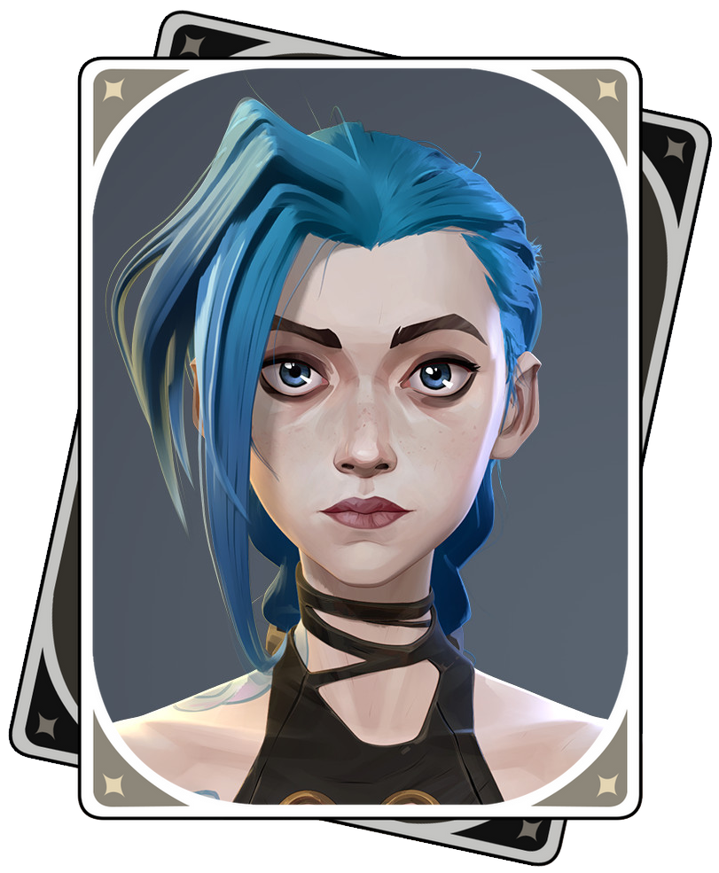
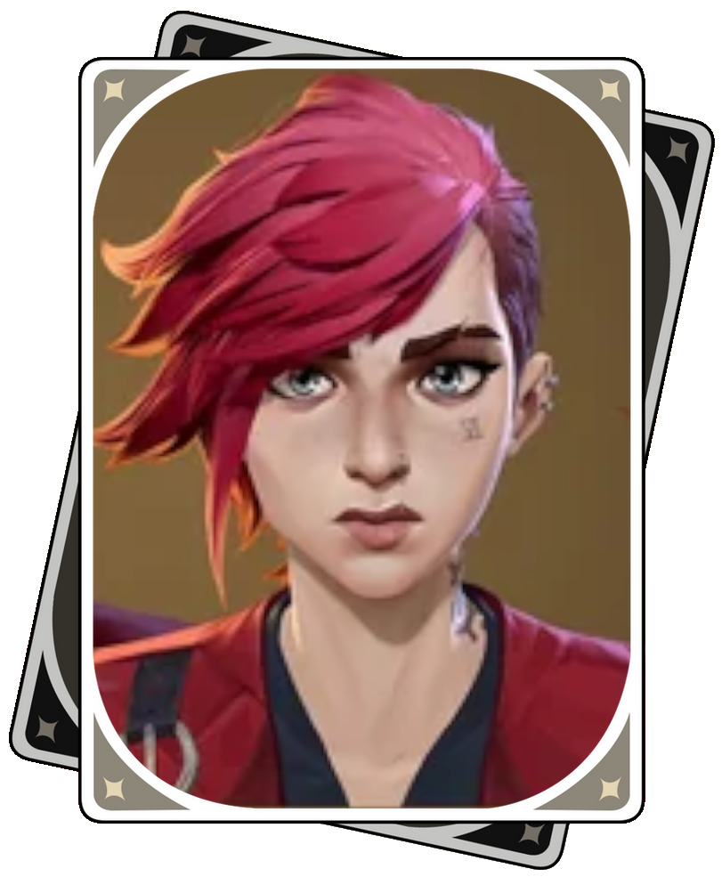

Arcane (titled onscreen as Arcane: League of Legends) is an adult animated steampunk action-adventure television series created by Christian Linke and Alex Yee. It was produced by the French animation studio Fortiche under the supervision of Riot Games, and distributed by Netflix. Set in Riot's League of Legends universe, it primarily focuses on sisters Vi and Jinx. The series was announced at the League of Legends tenth anniversary celebration in 2019, and its first season was released between November 6 and 20, 2021.
Saisons
Saison 1 (Released in 2021)
Act1 Ep1. Welcome to the Playground
Act1 Ep2. Some Mysteries Are Better Left Unsolved
Act1 Ep3. The Base Violence Necessary for Change
Act2 Ep4. Happy Progress Day!
Act2 Ep5. Everybody Wants to Be My Enemy
Act2 Ep6. When These Walls Come Tumbling Down
Act3 Ep7. The Boy Savio
Act3 Ep8. Oil and Water
Act3 Ep9. The Monster You Created
Saison 2 (Released in 2024 and continuing)
Act1 Ep1. Heavy Is the Crown
Act1 Ep2. Watch It All Burn
Act1 Ep3. Finally Got the Name Right
Act2 Ep4. Paint the Town Blue
Act2 Ep5. Blisters and Bedrock
Act2 Ep6. The Message Hidden Within the Pattern
Act3 Ep7. ??? (To be release)
Act3 Ep8. ??? (To be release)
Act3 Ep9. ??? (To be release)
Personnages

Jinx
Jinx, formerly known as Powder, is a central character in Arcane, a series inspired by League of Legends. She begins as a mischievous, kind-hearted young girl living in Zaun, under the care of her adoptive sister, Vi. Following a tragic accident where her actions inadvertently lead to the deaths of her friends and adoptive father, Vander, Powder is abandoned by Vi during a moment of emotional turmoil.
This trauma sets Powder on a dark path, and under the influence of the manipulative crime lord Silco, she transforms into Jinx, a volatile and unpredictable individual with a penchant for chaos and destruction. Her character is marked by deep emotional scars, intense guilt, and a desperate desire for her sister's approval, leading to moments of both tenderness and instability. Jinx’s story explores themes of identity, loss, and the impact of trauma.

Vi
Vi, short for Violet, is a pivotal character in Arcane and serves as the older sister of Jinx (Powder). She is a fiercely loyal and protective figure, known for her strength, resilience, and fiery personality. Growing up in the undercity of Zaun, Vi took on the role of caretaker for her younger sister after the death of their parents. She is deeply shaped by her experiences of poverty, oppression, and the challenges of survival in a harsh environment.
After a catastrophic event caused by Powder results in the death of their father figure, Vander, Vi reacts in anger, which leads to her separation from her sister. Believing herself to be at fault, Vi spends years in prison, where her resolve hardens, but her love for Powder remains strong.
Reunited years later, Vi struggles to bridge the emotional chasm between them, grappling with her guilt and Jinx's transformation. Vi’s narrative centers on her quest to protect her loved ones and fight for justice, often navigating the moral complexities of her actions as she seeks reconciliation and redemption
.